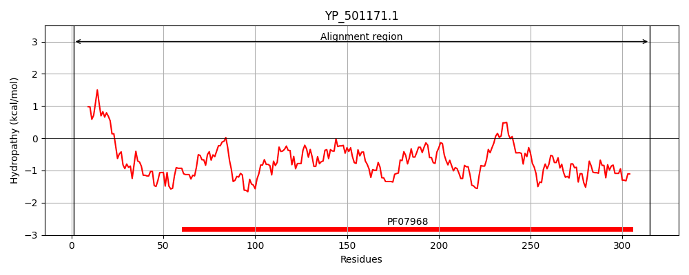
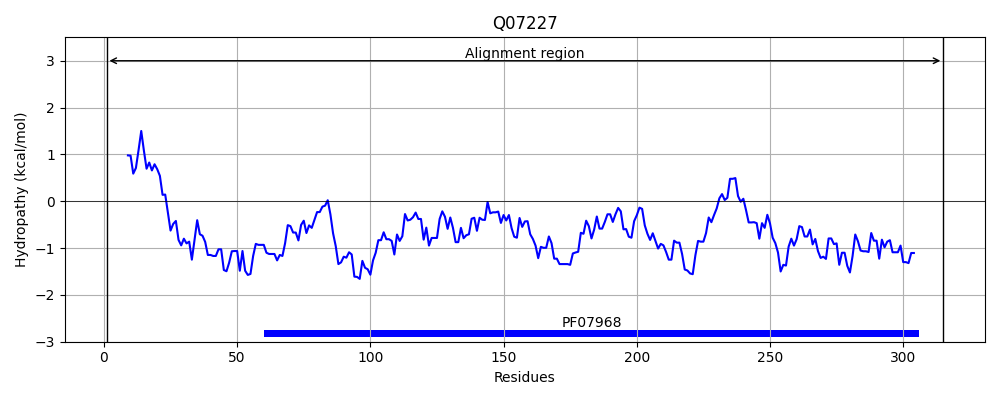
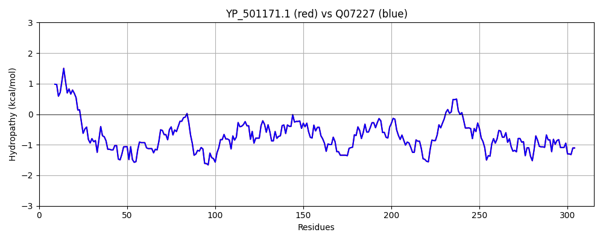

Hit Accession: Q07227
Hit TCID: 1.C.3.4.3
Hit Description: gnl|BL_ORD_ID|12267 gnl|TC-DB|Q07227|1.C.3.4.3 Gamma-hemolysin component C precursor (H-gamma-1) (H-gamma-I) - Staphylococcus aureus.
Mach Len: 315
e:0.000000
Query TMS Count : 0
Hit TMS Count: 0
TMS-Overlap Score: 0.000000
Predicted Substrates:CHEBI:25367;molecule
BLAST Alignment:
Score: 1657 , Bit scores: 642 bits, E-value: 0.0e+00, Alignment length: 315, Percentage identity: 100
Query: 1 MLKNKILTTTLSVSLLAPLANPLLENAKAANDTEDIGKGSDIEIIKRTEDKTSNKWGVTQNIQFDFVKDKKYNKDALILKMQGFISSRTTYYNYKKTNHVKAMRWPFQYNIGLKTNDKYVSLINYLPKNKIESTNVSQTLGYNIGGNFQSAPSLGGNGSFNYSKSISYTQQNYVSEVEQQNSKSVLWGVKANSFATESGQKSAFDSDLFVGYKPHSKDPRDYFVPDSELPPLVQSGFNPSFIATVSHEKGSSDTSEFEITYGRNMDVTHAIKRSTHYGNSYLDGHRVHNAFVNRNYTVKYEVNWKTHEIKVKGQN 315
MLKNKILTTTLSVSLLAPLANPLLENAKAANDTEDIGKGSDIEIIKRTEDKTSNKWGVTQNIQFDFVKDKKYNKDALILKMQGFISSRTTYYNYKKTNHVKAMRWPFQYNIGLKTNDKYVSLINYLPKNKIESTNVSQTLGYNIGGNFQSAPSLGGNGSFNYSKSISYTQQNYVSEVEQQNSKSVLWGVKANSFATESGQKSAFDSDLFVGYKPHSKDPRDYFVPDSELPPLVQSGFNPSFIATVSHEKGSSDTSEFEITYGRNMDVTHAIKRSTHYGNSYLDGHRVHNAFVNRNYTVKYEVNWKTHEIKVKGQN
Sbjct: 1 MLKNKILTTTLSVSLLAPLANPLLENAKAANDTEDIGKGSDIEIIKRTEDKTSNKWGVTQNIQFDFVKDKKYNKDALILKMQGFISSRTTYYNYKKTNHVKAMRWPFQYNIGLKTNDKYVSLINYLPKNKIESTNVSQTLGYNIGGNFQSAPSLGGNGSFNYSKSISYTQQNYVSEVEQQNSKSVLWGVKANSFATESGQKSAFDSDLFVGYKPHSKDPRDYFVPDSELPPLVQSGFNPSFIATVSHEKGSSDTSEFEITYGRNMDVTHAIKRSTHYGNSYLDGHRVHNAFVNRNYTVKYEVNWKTHEIKVKGQN 315 | Protein Hydropathy Plots: |
|---|
|  |  |
Pairwise Alignment-Hydropathy Plot:
|
|---|
|  |